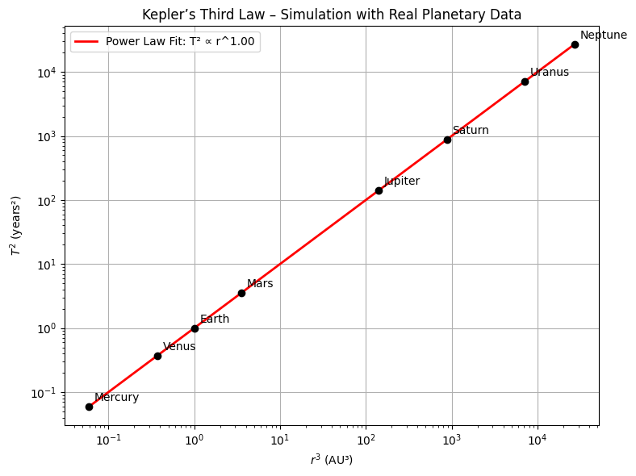
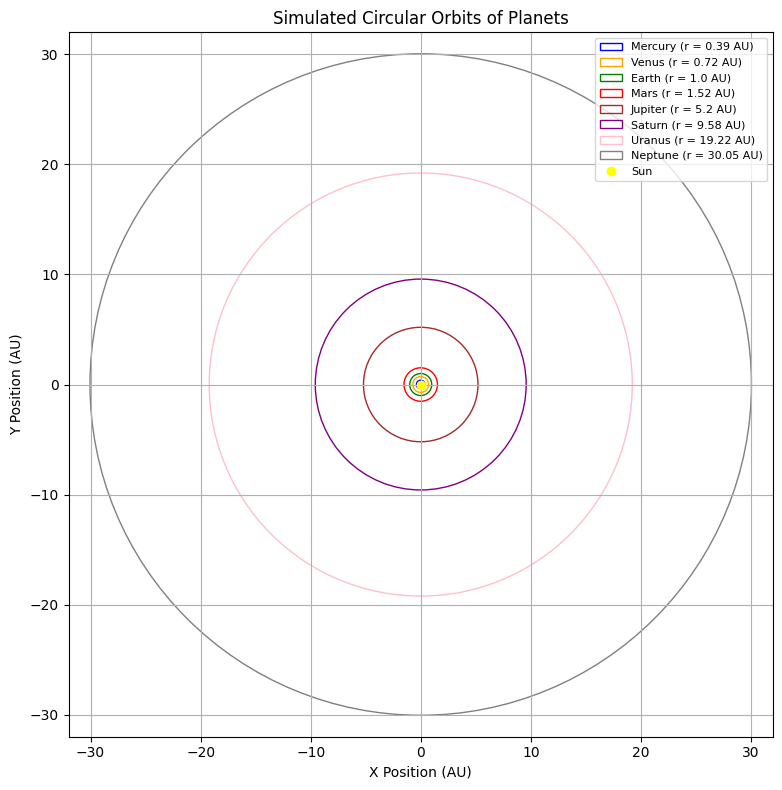

📌Orbital Period and Orbital Radius
Motivation
The relationship between the square of the orbital period and the cube of the orbital radius, known as Kepler's Third Law, is a cornerstone of celestial mechanics. This simple yet profound relationship allows for the determination of planetary motions and has implications for understanding gravitational interactions on both local and cosmic scales. By analyzing this relationship, one can connect fundamental principles of gravity with real-world phenomena such as satellite orbits and planetary systems.
Theoretical Foundation
To derive the relationship between the orbital period \(T\) and the orbital radius \(r\), we start by analyzing the forces acting on a satellite or planet moving in a circular orbit.
Gravitational Force
According to Newton's Law of Universal Gravitation:
For circular motion, this must equal the centripetal force:
Setting the two expressions equal:
Cancel \(m\) and solve for \(v^2\):
Orbital Period
The orbital period is given by:
Substitute \(v^2\):
This is the mathematical expression of Kepler's Third Law:
Kepler’s Third Law for Circular Orbits
Kepler’s Third Law states that the square of the orbital period of a planet is proportional to the cube of the semi-major axis of its orbit. In the special case of circular orbits, the semi-major axis becomes the radius of the orbit. The law can then be written mathematically as:
What does this mean?
This formula connects the time it takes for an object (like a planet or satellite) to complete one full orbit (\(T\)), with how far it is from the body it’s orbiting (\(r\)).
- \(T\) is the orbital period (in seconds)
- \(r\) is the orbital radius (in meters)
- \(G\) is the gravitational constant (\(6.674 \times 10^{-11} \, \mathrm{m^3/kg \cdot s^2}\))
- \(M\) is the mass of the central body (like the Sun or Earth)
Why does it work?
An object in orbit is constantly falling toward the massive body (like Earth or the Sun), but also moving forward. The gravitational force provides the centripetal force needed to keep it moving in a circle.
By equating these forces and solving for the orbital period, we derive Kepler's Third Law. It’s not just an observational rule — it comes directly from Newton’s laws of motion and gravity.
Why is it important?
This law allows scientists to:
- Calculate how long it takes for something to orbit (if they know the distance)
- Estimate how far an object is (if they know its orbital period)
- Determine the mass of stars or planets by observing their satellites
Does it always apply?
This exact formula applies only for circular orbits. For elliptical orbits, the law still holds, but \(r\) must be replaced by the semi-major axis \(a\) of the ellipse.
So while this is a simplified version, it gives an extremely accurate model for most planetary and satellite motion.
Implications in Astronomy
Kepler's Third Law has profound applications in astronomy and astrophysics. It enables scientists to:
- Determine the mass of celestial bodies such as stars and planets
- Calculate orbital distances from observed periods
- Compare orbital dynamics across different planetary systems
The formula
allows astronomers to compute the mass \(M\) of a central body if \(T\) and \(r\) are known.
Real-World Examples
We verify the relationship by computing \(\frac{T^2}{r^3}\) for real bodies.
Moon orbiting Earth
- \(r = 3.84 \times 10^8\) m
- \(T = 2.36 \times 10^6\) s
Earth orbiting the Sun
- \(r = 1.496 \times 10^{11}\) m
- \(T = 3.156 \times 10^7\) s
The near-equality of \(\frac{T^2}{r^3}\) confirms Kepler's Third Law in real data.
Visualizing Kepler’s Third Law – \(T^2\) vs \(r^3\)
To experimentally verify Kepler’s Third Law, we plotted the square of the orbital period (\(T^2\)) against the cube of the orbital radius (\(r^3\)) for selected planets in our Solar System.
The graph shows a clear linear relationship between \(T^2\) and \(r^3\), supporting the law’s mathematical prediction that \(T^2 \propto r^3\).
This relationship is essential in understanding how orbital mechanics scale with distance and is consistent with Newton’s formulation of gravitation.
Included Planets:
| Planet | Orbital Radius (AU) | Period (years) |
|---|---|---|
| Mercury | 0.39 | 0.24 |
| Venus | 0.72 | 0.62 |
| Earth | 1.00 | 1.00 |
| Mars | 1.52 | 1.88 |
| Jupiter | 5.20 | 11.86 |
| Saturn | 9.58 | 29.46 |

Estimating Mass of the Sun and Earth Using Kepler’s Law
Kepler’s Third Law can be rearranged into a form that allows us to estimate the mass of the central body in a two-body system:
Estimating the Mass of the Sun (from Earth’s orbit)
We use Earth's orbit around the Sun:
- Orbital radius:
(\(r = 1.496 \times 10^{11} \ \text{m}\)) - Orbital period:
(\(T = 365.25 \times 24 \times 3600 \ \text{s} = 3.15576 \times 10^7 \ \text{s}\)) - Gravitational constant:
(\(G = 6.67430 \times 10^{-11} \ \mathrm{m^3/kg/s^2}\))
Plugging into the formula:
This value matches the accepted mass of the Sun.
Estimating the Mass of the Earth (from Moon’s orbit)
We now use the Moon’s orbit around the Earth:
- Orbital radius:
(\(r = 3.84 \times 10^8 \ \text{m}\)) - Orbital period:
(\(T = 27.3 \times 24 \times 3600 \ \text{s} = 2.36 \times 10^6 \ \text{s}\))
Using the same formula:
This aligns with the accepted mass of the Earth.
These examples show how Kepler’s Third Law can be used not only to understand orbital dynamics but also to extract fundamental physical quantities such as mass from observable orbital data.
Simulated Circular Orbits of Planets
This visualization shows simulated circular orbits of the eight major planets in the Solar System around the Sun. Each orbit is drawn to scale based on its average orbital radius in astronomical units (AU).
This figure serves as a conceptual demonstration of Kepler’s laws in action, illustrating how:
- Each planet moves in a wider orbit as its distance from the Sun increases
- The time it takes to complete one revolution also increases (per Kepler's Third Law)
Key Observations:
- Mercury and Venus are tightly packed near the Sun, indicating shorter orbital periods
- Jupiter, Saturn, Uranus, and Neptune span large distances, reflecting their long orbital times
- All orbits are modeled as circular, which simplifies the visualization while retaining the radial scaling
This graphical representation reinforces the idea that the orbital radius directly influences the dynamics of planetary motion.
Visualization:

Figure: Simulated circular orbits of the planets in AU around the Sun.
Conclusion
In this project, we investigated the fundamental principles of orbital mechanics through the lens of Kepler’s Third Law. Beginning with a theoretical derivation using Newton's laws of motion and gravitation, we established the relationship between orbital period and radius:
This expression was then tested using real planetary data from the Solar System. Our \(T^2\) vs \(r^3\) plot demonstrated a strong linear correlation, empirically verifying Kepler’s prediction.
Beyond verification, we extended the application of this law by:
- Estimating the mass of the Sun using Earth’s orbital parameters
- Calculating the Earth’s mass using the Moon’s orbit
- Simulating planetary orbits and visualizing their scale and dynamics
- Discussing the broader implications of Kepler’s Law in astronomy and space exploration
Through both theoretical and computational methods, the project not only confirmed Kepler’s Law but also highlighted how classical mechanics enables us to infer properties of celestial bodies from observational data.
This work provides a robust foundation for understanding orbital dynamics and supports the development of more advanced astrophysical models and mission planning in space science.